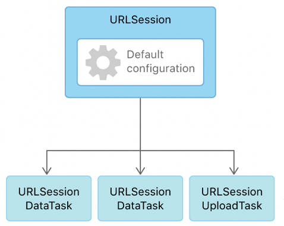

iOS 网络相关
URLSession

URLSession
URLSessionConfiguration
URLSessionTask
URLSessionDataTask
URLSessionDownloadTask
URLSessionUploadTask
URLSessionStreamTask
URLSessionTask 中包含：
URLRequest
URLResponse
HTTPURLResponse
Demo
#import <AFNetworking/AFNetworking.h>
@interface MyNetworkTest () <NSURLSessionDataDelegate>
@property (nonatomic, strong) NSURLSession *urlSession;
@end
@implementation MyNetworkTest
- (void)start {
NSURL *url = [NSURL URLWithString:@"https://blog.quding0308.com/"];
NSURLSessionDataTask *task = [self.urlSession dataTaskWithURL:url];
[task resume];
}
- (NSURLSession *)urlSession {
if (_urlSession == nil) {
NSURLSessionConfiguration *config = [NSURLSessionConfiguration defaultSessionConfiguration];
_urlSession = [NSURLSession sessionWithConfiguration:config delegate:self delegateQueue:NSOperationQueue.mainQueue];
}
return _urlSession;
}
#pragma mark - NSURLSessionTaskDelegate & NSURLSessionDataDelegate
// https 证书校验 session 级别
- (void)URLSession:(NSURLSession *)session
didReceiveChallenge:(NSURLAuthenticationChallenge *)challenge
completionHandler:(void (^)(NSURLSessionAuthChallengeDisposition, NSURLCredential * _Nullable))completionHandler {
NSLog(@"=== session didReceiveChallenge");
NSLog(@"%@", challenge.protectionSpace.authenticationMethod);
// 1.从服务器返回的受保护空间中拿到证书的类型
// 2.判断服务器返回的证书是否是服务器信任的
if ([challenge.protectionSpace.authenticationMethod isEqualToString:NSURLAuthenticationMethodServerTrust]) {
NSLog(@"是服务器信任的证书");
// 3.根据服务器返回的受保护空间创建一个证书
// void (^)(NSURLSessionAuthChallengeDisposition, NSURLCredential *)
// 代理方法的completionHandler block接收两个参数:
// 第一个参数: 代表如何处理证书
// 第二个参数: 代表需要处理哪个证书
//创建证书
NSURLCredential *credential = [NSURLCredential credentialForTrust:challenge.protectionSpace.serverTrust];
// 4.证书
completionHandler(NSURLSessionAuthChallengeUseCredential, credential);
} else {
// 允许 NSURLSession 使用不安全的 SSL 连接
completionHandler(NSURLSessionAuthChallengePerformDefaultHandling, nil);
}
}
// task 级别
- (void)URLSession:(NSURLSession *)session
task:(NSURLSessionTask *)task
didReceiveChallenge:(NSURLAuthenticationChallenge *)challenge
completionHandler:(void (^)(NSURLSessionAuthChallengeDisposition disposition, NSURLCredential * _Nullable credential))completionHandler {
[self URLSession:session didReceiveChallenge:challenge completionHandler:completionHandler];
}
// 重定向回调
- (void)URLSession:(NSURLSession *)session
task:(NSURLSessionTask *)task
willPerformHTTPRedirection:(NSHTTPURLResponse *)response
newRequest:(NSURLRequest *)request
completionHandler:(void (^)(NSURLRequest * _Nullable))completionHandler {
NSLog(@"=== willPerformHTTPRedirection");
}
// 接收到 response header
- (void)URLSession:(NSURLSession *)session
dataTask:(NSURLSessionDataTask *)dataTask
didReceiveResponse:(NSURLResponse *)response
completionHandler:(void (^)(NSURLSessionResponseDisposition disposition))completionHandler {
NSLog(@"=== didReceiveResponse");
completionHandler(NSURLSessionResponseAllow);
}
// 接收到返回的数据
- (void)URLSession:(NSURLSession *)session
dataTask:(NSURLSessionDataTask *)dataTask
didReceiveData:(NSData *)data {
NSLog(@"=== didReceiveData");
}
// 数据接收完成，缓存到本地 (当 didReceiveData 调用完成后，如果本地做缓存，则会调用)
- (void)URLSession:(NSURLSession *)session
dataTask:(NSURLSessionDataTask *)dataTask
willCacheResponse:(NSCachedURLResponse *)proposedResponse
completionHandler:(void (^)(NSCachedURLResponse * _Nullable cachedResponse))completionHandler {
NSLog(@"=== willCacheResponse");
completionHandler(proposedResponse);
}
// 请求完成
- (void)URLSession:(NSURLSession *)session
task:(NSURLSessionTask *)task
didCompleteWithError:(NSError *)error {
NSLog(@"=== didCompleteWithError");
}
@end
AFNetworking
AFNetworking 库中一共有 6 个文件
- 2 个 SessionManager
- AFURLSessionManager
- AFHTTPSessionManager
- 2 个 Serialization
- AFURLRequestSerialization
- AFURLResponseSerialization
- AFNetworkReachabilityManager
- AFSecurityPolicy
AFNetworkReachabilityManager
每次调用 [AFNetworkReachabilityManager manager] 都会创建一个新的实例
AFSecurityPolicy
AFSSLPinningMode
有 3 种方式可设置：
AFSSLPinningModeNone
默认使用。信任服务器端返回的证书，iOS 系统会校验证书的有效性。
AFSSLPinningModePublicKey
使用指定的 publickey (本地设置证书，然后从证书中读取 publickey 来设置)
针对某一个域名，客户端会将服务器返回的证书中的 publickeys 与本地保存的证书中的 publickey 进行校验。如果两者有交集，则认为校验通过。
AFSSLPinningModeCertificate
针对某一个域名，客户端会将服务器返回的证书 与本地保存的证书 进行校验。如果两者之间有相同的证书，则校验通过。
注意：
- AFSSLPinningModePublicKey 只比对证书里的 publickey，即使服务器证书有所变动，只要 public key 不变，就能通过验证。如果证书过期了，服务器可以直接更换新证书，只需保证 publickey 不变即可，客户端不需要更新
- AFSSLPinningModeCertificate 会对比证书里的所有内容，包括证书的 pubkey、过期时间 等。比 AFSSLPinningModePublicKey 更安全，但是如果证书过期，必须更新客户端，更换证书。
pin 为 大头针， pinned 指固定的，置顶的（用大头针别住了，固定的）
设置证书：
- 通过 certificatesInBundle:(NSBundle *)bundle 来获取证书，其中 bundle 中所有以 .cer 结尾的证书都会被自动加载。
- certificatesInBundle 返回的 Set， 调用 setPinnedCertificates 设置证书
AFSecurityPolicy *policy = [AFSecurityPolicy policyWithPinningMode:AFSSLPinningModePublicKey];
NSSet *certificates = [AFSecurityPolicy certificatesInBundle:[NSBundle mainBundle]];
[policy setPinnedCertificates:certificates];
安全策略
allowInvalidCertificates
是否允许无效的证书，是否校验证书的有效性(注意，如果校验证书结果为 kSecTrustResultUnspecified ，也认为可用)。
如果是自建证书，则会被系统认为是无效证书，此属性需要设置为 YES，
validatesDomainName
是否需要验证域名。从服务器下载的证书读取包含的domain，然后判断是否包含当前的证书
假如证书的域名与你请求的域名不一致，需把该项设置为NO。
适用情况：
- 适用 ip 替换了 域名请求，此属性需要设置为 NO
- 客户端请求的是子域名，而证书上的 是另外一个域名。因为SSL证书上的域名是独立的
鉴权相关
可以针对某域名，单独处理不做 https 的证书校验
[_sessionManager setSessionDidReceiveAuthenticationChallengeBlock:^NSURLSessionAuthChallengeDisposition(NSURLSession * _Nonnull session, NSURLAuthenticationChallenge * _Nonnull challenge, NSURLCredential *__autoreleasing _Nullable * _Nullable credential) {
if ([challenge.protectionSpace.host isEqualToString:@"com.xx.www"]) {
return NSURLSessionAuthChallengePerformDefaultHandling;
} else if (credential) {
return NSURLSessionAuthChallengeUseCredential;
} else {
return NSURLSessionAuthChallengePerformDefaultHandling;
}
}];